AI 每日新聞彙整
全部主題
其他
AI 跨世代使用調查：Z 世代追求效率，X 世代將成職場普及關鍵
最新調查顯示，人工智慧（AI）已不再是少數人的嘗鮮工具，而是逐漸滲透各個年齡層的日常服務。過去一年，高達 82 […]
- 科技新報 TechNews AI 跨世代使用調查：Z 世代追求效率，X 世代將成職場普及關鍵
9050proxiaomi
IT早报 0914：马斯克、奥尔特曼响应 Anthropic 呼吁放缓前沿 AI 开发；华为麒麟 9050 Pro 能效实测出炉；智谱官宣 50 亿美元融资；小米 SU7L 谍照再曝...
“IT早报”时间，大家好，现在是 2026 年 9 月 14 日星期一，今天的重要科技资讯有： 1. Anthropic CEO 阿莫迪呼吁放缓前沿 AI 模型开发后，xAI 马斯克、OpenAI 奥尔特曼等业界大佬赞同 Anthropic CEO 阿莫迪发文呼吁放缓前沿 AI 模型开发，并倡议独立监控与全球监管。马斯克转发称“达里奥是对的”，奥尔特曼也表示赞同，称 OpenAI 也会采用开放第三方评估权限。大佬罕见一致。>> 查看详情 2. 华为 Mate XT 2 性能解禁：首款逻辑折叠 τ 芯片麒麟 9050 Pro 实际游戏体验比肩骁龙 8 El
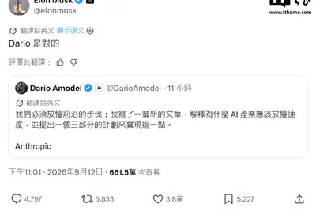
googletpuasic
Google TPU打平成本僅需1年 聯發科、博通ASIC業績有上修空間
近期Google Cloud執行長Thomas Kurian公開表示，Google在AI伺服器的整體投資回收期不到兩年，自研晶片的回收期，更是這個數字的一半。換算下來，這意味著Goo...
- DIGITIMES Google TPU打平成本僅需1年 聯發科、博通ASIC業績有上修空間
boocomputebuild-own-operate
AI算力中心首波BOO申請超預期 政府函釋法令為電力解套
數位發展部公告「徵求民間自行規劃申請參與AI算力中心BOO案」（興建、擁有、營運，Build-Own-Operate），首波有3家業者申請，鴻海和技嘉已通過資格審查並完成公聽會...
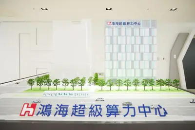
- DIGITIMES AI算力中心首波BOO申請超預期 政府函釋法令為電力解套
hbmdram
營益率飆破80%超越三大廠 長鑫科技爽吃AI紅利
人工智慧（AI）熱潮意外讓中國DRAM龍頭長鑫存儲，狂吃通用記憶體漲價紅利。
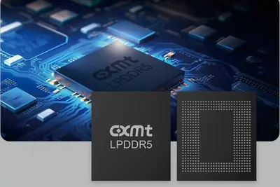
- DIGITIMES 營益率飆破80%超越三大廠 長鑫科技爽吃AI紅利
hbmnvidia
【動物農莊】HBM太貴老黃也得算帳 水豚晶教你看懂NVIDIA省錢術
- DIGITIMES 【動物農莊】HBM太貴老黃也得算帳 水豚晶教你看懂NVIDIA省錢術
aidcdatacentercompute
AIDC用電需求爆發 車廠轉攻儲能搶填閒置電池產能
北美電動車（EV）市場成長放緩，加上海關關稅與政策限制，迫使車廠與電池業者尋求閒置產能的解決方案。隨著生成式AI資料中心（AIDC）算力快速擴張，帶來的巨量用電與...
- DIGITIMES AIDC用電需求爆發 車廠轉攻儲能搶填閒置電池產能
2027dellchip
AI需求跑贏晶片擴產 戴爾示警2027供應缺口再擴大
隨著人工智慧（AI）運算需求續飆，半導體供應緊張恐將持續一段時間，戴爾（Dell）執行長Michael Dell便預測，2027年AI運算與PC市場面臨的晶片供給結構性短缺將更加...
- DIGITIMES AI需求跑贏晶片擴產 戴爾示警2027供應缺口再擴大
agent
企業AI Agent加速擴張 伊雲谷整合集團量能攻企業級AI
近年企業導入生成式AI的步調加快，應用也從單一部門、單一任務，擴大到跨部門與核心業務流程。
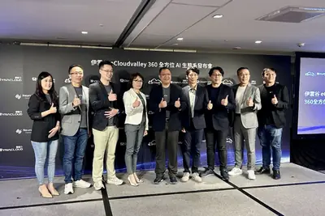
- DIGITIMES 企業AI Agent加速擴張 伊雲谷整合集團量能攻企業級AI
5200nvidiadatacenter
5,200萬美元買宇力、35億美元投聯發科 NVIDIA與台晶片業20年連結
NVIDIA與聯發科近期因35億美元投資案成為市場焦點，雙方合作進一步擴大至客製化AI晶片、AI PC、車用及資料中心。事實上，雙方交集並非近年才出現，早在20多年前PC...
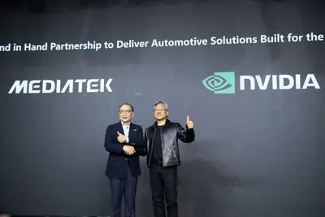
- DIGITIMES 5,200萬美元買宇力、35億美元投聯發科 NVIDIA與台晶片業20年連結
perplexityastrasystems
Perplexity trusts GPT-6 Astra with end-to-end systems
Perplexity uses Astra to write communications, change software, and monitor production systems, and checks in much less frequently than with earlier models.
anthropic20252026
消息称 Anthropic 预计自身有望连续第二个季度实现盈利
IT之家 9 月 14 日消息，《金融时报》稍早前报道称，人工智能初创企业 Anthropic 已向部分股东告知， 其有望在 2026Q3 继续录得正的经调整营业利润 ，连续第二个季度实现盈利。 Anthropic 在今年二季度首次实现盈利，营业收入规模已达到 115 亿美元 （IT之家注：现汇率约合 774.05 亿元人民币） ，较 2025 年同期激增 14 倍。而到 2026 年 7 月底， 该企业的“运行率”（年化营收）已达 650 亿美元 （现汇率约合 4,375.06 亿元人民币） ，较 2025 年底的 90 亿美元大幅增长。 知情人士透露
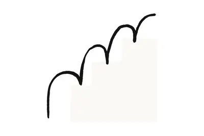
openai
優先處理 AI 安全風險，OpenAI 執行長：2026 年內不會上市
OpenAI 執行長奧特曼（Sam Altman）親口證實，雖然公司已透過保密方式提交 IPO 申請，但今年內 […]

- 科技新報 TechNews 優先處理 AI 安全風險，OpenAI 執行長：2026 年內不會上市
微软 CEO 纳德拉：支持 AI 审慎发展与独立审计，AI 行为准则明日公布
IT之家 9 月 14 日消息，微软首席执行官萨蒂亚 · 纳德拉今天在 X 平台发文，谈及微软的前沿 AI 发展理念。 纳德拉表示，任何对超级智能的探索都必须在核心原则约束下运行：如果人们构建的 AI 无法帮助人类，且无法被人类控制，那么它就不值得发展。他认为 AI 需要加速发展，使其成果能够得到广泛传播，惠及不同国家、社区和企业。这显然需要建立前沿生态，让开源和闭源模型都能蓬勃发展。 对企业来说，这意味着他们必须完全掌握自身独有的隐性知识。每家公司都应该可以构建属于自己的、持续学习闭环、不断迭代的系统，而不必依赖于单一模型供应商，还应当将自身知识融入模
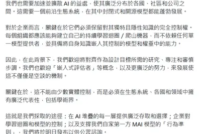
grokcopilotxai
微软宣布将 xAI 旗下 Grok 模型整合进 Office 三件套，为用户提供 OpenAI 以外模型选择
IT之家 9 月 14 日消息，微软去年开始逐步放弃 Microsoft 365 Copilot 仅使用 OpenAI 模型的策略，先后将 Anthropic 的 Claude 模型引入 Researcher、Copilot Studio 等产品。 如今，微软进一步扩大 Microsoft 365 Copilot 可使用的 AI 模型范围，引入 SpaceX 旗下 xAI 的 Grok 模型。目前，Grok 已经开始陆续登陆 Word、Excel 和 PowerPoint 中的 Copilot，为用户提供 OpenAI 和 Anthropic 之外的另一
100nvidiaamazon
【科技早餐】NVIDIA 傳投資 Anthropic 最高 100 億美元，Microsoft 資料中心容量擬增至 38 GW
【科技早餐】今天精選 8 則國內外重要科技新聞。 ＊NVIDIA 傳投資 Anthropic 最高 100 億美元，1,000 億美元 IPO 挑戰史上最大 《路透》引述兩名知情人士報導，Anthropic 正洽談邀請 NVIDIA 擔任首次公開募股，也就是 IPO 的基石投資人。Anthropic 尋求募資最高 1,000 億美元，公司估值可能達到約 2 兆美元；NVIDIA 則考慮投資最高 100 億美元。如果依照目前規模完成，將挑戰史上最大 IPO。知情人士表示，上市目標是在今年 11 月美國期中選舉以前完成，但募資金額、估值與時程仍可能改變。 N
- TechOrange 科技報橘 【科技早餐】NVIDIA 傳投資 Anthropic 最高 100 億美元，Microsoft 資料中心容量擬增至 38 GW
trumpmikejohnson
Trump and Mike Johnson think the AI industry is overreacting
Yesterday, Anthropic CEO Dario Amodei published a lengthy open letter saying it was time to "pace the frontier" and slow down AI development. OpenAI's Sam Altman and Elon Musk both agreed, publicly voicing their support on X. Even Alphabet's Demis Hassabis offered tentative suppo

latestindustrybehind
What’s behind the AI industry’s latest warnings of doom?
On Equity, we discussed the AI industry's latest debate about whether it poses an existential threat to humanity.
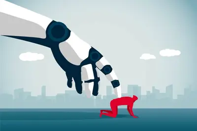
- TechCrunch AI What’s behind the AI industry’s latest warnings of doom?
obamademocratsclear
Obama urges Democrats to have a ‘clear plan’ for AI safeguards
Obama recently said that Democrats need to make artificial intelligence one of their “central agendas” and “have a very clear plan” to address concerns around the technology’s economic impact and safety.
fujitsu-monaka2027amd
消息称富士通最早 2027 年开始向海外销售 FUJITSU-MONAKA 处理器
IT之家 9 月 13 日消息，《日经亚洲》当地时间今日报道称，富士通 (Fujitsu) 将最早从 2027 年开始向日本以外的亚洲、美洲市场出口其 2nm 工艺 Arm 指令集处理器 FUJITSU-MONAKA。 IT之家注意到，富士通早在 2024 年就为 FUJITSU-MONAKA 平台的开发与推广同 Supermicro（超微）达成合作。这意味着 富士通将 FUJITSU-MONAKA 视为一种可对外销售的商业化产品 ，而不是“富岳”超算上的 A64FX 那样的纯粹内部芯片。 富士通正在与 40 多家公司洽谈基于 FUJITSU-MONAK
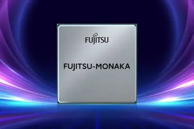
lingbot-world2.0small
蚂蚁灵波开源三款 LingBot-World 2.0 世界模型：Small 参数 1.3B 面向消费级单卡 GPU 设计
IT之家 9 月 13 日消息，继今年 7 月开源 LingBot-World 2.0 14B 模型后，蚂蚁灵波科技本周进一步开源三款模型：LingBot-World 2.0 Small（1.3B）、LingBot-World 2.0 Bidirectional 和 LingBot-World 2.0 Causal Pretrain。 据介绍，LingBot-World 2.0 是一个实时交互世界模型。模型支持小时级连续生成，并可以响应攻击、射箭、施法、射击等角色动作，以及下雪、下雨等环境事件。在更高算力与相应推理配置下，LingBot-World 2.
apexxmgm26
XMG 推出 RTX 5070 12GB 款 APEX 16、PRO 16 VE 游戏本
IT之家 9 月 13 日消息，PC 品牌 XMG 当地时间本月 10 日宣布推出 搭载 NVIDIA GeForce RTX 5070 笔记本电脑 GPU（12GB GDDR7 显存） 的 M26 款 APEX 16、PRO 16 VE 游戏笔记本电脑。 APEX 16 (M26) 采用 AMD 处理器平台， 可选锐龙 9 9955HX、锐龙 9 8945HX ，配备 16" 2560×1600 300Hz 500nits 屏幕，集成三风扇散热系统，提供 2 个 M.2 SSD 盘位并拥有 microSD 读卡器，包含 99.8Whr 电池的机身质量为
cudawindowsurl
CUDA for AMD on Windows
Article URL: https://github.com/Speedstu/CUDA-for-AMD-Windows Comments URL: https://news.ycombinator.com/item?id=49684356 Points: 131 # Comments: 67
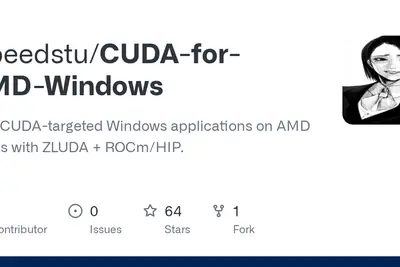
- Hacker News (100+) CUDA for AMD on Windows
deepmindmetr
谷歌 DeepMind 安全研究员离职，称 AI 五年内造成巨大危害的概率高得吓人
IT之家 9 月 13 日消息，谷歌 DeepMind 研究员乔希 · 恩格尔斯（Josh Engels）已离开公司的通用人工智能安全团队，加入独立 AI 评估机构 METR。他表示，自己认为未来五年内 AI 系统造成巨大危害的概率“高得吓人”。此事进一步加剧了外界对 AI 研发速度的担忧。 恩格尔斯在 X 平台发文称，尽管他很喜欢在 DeepMind 的工作，并且拒绝了 Anthropic 和 OpenAI 的邀约，但他还是在三周前离开了 DeepMind，因为他认为先进人工智能相关的风险已经变得太高了。 “所有 AI 企业都在致力于打造超级智能。”他
2030
我国力争到 2030 年关键软件全面实现智能化升级
IT之家 9 月 13 日消息，据新华社报道，工业和信息化部 11 日对外发布《“人工智能 + 软件”专项行动实施方案》，提出到 2030 年，人工智能与软件和信息技术服务业融合发展实现新跃升， 关键软件全面实现智能化升级 ，智能编程、智能体软件及智能服务等新业态成为产业新增长极。 实施方案明确，到 2028 年，软件和信息技术服务业智能化水平显著提升，推广应用覆盖 2 万家规模以上软件企业，累计组织实施 100 项软件企业智能化技改项目，在重点行业打造 100 个智能体软件标杆应用，孵化 5 个以上优质开源项目。 IT之家注意到，实施方案围绕推进软件生
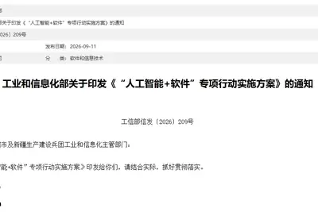
glm
智谱宣布完成约 50 亿美元融资，用于下一代 GLM 基础模型研发等
IT之家 9 月 13 日消息，智谱今日宣布完成 约 50 亿美元 （IT之家注：现汇率约合 336.54 亿元人民币） 融资，包括约 20 亿美元 （约 156.8 亿港币） 股份配售及约 30 亿美元 （约 201.4 亿人民币） 可转债发行。 此次融资主要将用于 下一代 GLM 基础模型 及完全自训练 （Fully Self Training） 体系的研发 ，以及大规模训练、生产推理、算力资源及相关技术基础设施的部署及升级。 在公告中，智谱将完全自训练描述为下一代 GLM 在上一代 GLM 构建的环境中训练，形成递归式自我改进循环。具体投入包括自动
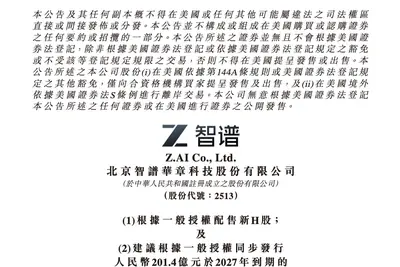
agentsthirstypower
AI Agents Are Thirsty for Power
Silicon Valley is shifting away from chatbot queries toward a future filled with resource-intensive agentic AI—and it's driving the data center buildout.
- Wired AI AI Agents Are Thirsty for Power
AI 越聰明 EQ 越值錢，專家：父母必學的「情緒教養」將決定孩子未來高度
一位擁有豐富企業高階主管輔導經驗的工業與組織心理學家指出，在人工智慧（AI）快速發展的時代，具備辨識、理解與表 […]
- 科技新報 TechNews AI 越聰明 EQ 越值錢，專家：父母必學的「情緒教養」將決定孩子未來高度
safety
「影子 AI」入侵病歷系統，醫療機構的隱形資安危機
醫療機構正加速將人工智慧（AI）導入臨床與行政流程，但最新分析顯示，AI 在大幅提升效率的同時，也因資料流轉、 […]
- 科技新報 TechNews 「影子 AI」入侵病歷系統，醫療機構的隱形資安危機